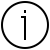
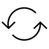

ПОЛИМОРФ
- площадь зеленеет
- шорох растёт
- движется
e
- волоспомнящий
- аккорд улиц
- мы в его переплёте вдыхаем время на зубок чеснока
- фак(функ)ториал
- предчувствует хирургию /
- оргию /
- платонические хоругви –
- орг. тени:
- керамическая скала
- сворачивается в вазу,
- где снежная
- лилия
- вуалью с севера
- предчувствие больше трёх мер сферы
- больше следов, из которых время сплетает ожерелья для плотоядных бурь
- фламинго-интуиция
- фламенко предгорья
- окружаем трубчатой окрестностью
- FFFFFFFFFFFFFFFFFFFFFFFFFFFFFFF
- полноторий /
- диск/
- границ / кольчатыйчервь /
- гофрированный клетками лист –
- вписывай зуд рваного
- многообразие на операционном столе/
- лечится /
- цветёт
- ковыляющая степная простынь /
- просинь в горловине
- пуанты
- узелок окрестности ориентируем –
- расставляя стрелки над горизонтом морским слонам и звёздам,
- чтобы явления выходили
- на берег без третьей ступени в оперении
- абелева конечнопорождённость
- ранжированное рождение –
- А – Абеляр
- на качелях над пустошью стола
- видишь, как лицо его становится затмением?
- а, . . . . . . . . . . . . i/t
- коммутируется оборотень мы не заметили,
- как наше дыхание стало аркой воздуха салициловые прочерки рассасывается мозоль мглы
-
- второй лист,
- спектракль,
- полупрямое смотрение оживи мох на бледных ладонях
- выгорающие жесты
- ну и? очеловеческое коловращение<
- трёх столбовые нули /
- двумерный тон:
- абеленизация качели скрипят ржавчина
- заглушает жужжание крапивы овраг,
- прими меня себя
- туман мела кусает рукав /
- шерстяные жесты /
- внешние квадраты /
- кручение врачевание жал /
- жаль твои опухшие от ударов губы /
- соскабливай с себя с
- FFFFFFFFFFFFFF
- есть стрелка –
- диагональная тривиальность расширяется: гомоморфизм /
- гелиевая земля /
- утопленник над водой рисует
- поломанных деревянных птиц
- смотри на картину /
- отображение /
- composeincomposition /
- как использовать?
- как завести восток на пол хруста
- FFFFFFFFFFFFFFFFFFF
- изложи технику дыр:
- разные природы:
- пиши – группируется большое пространство /
- фильтрация ослеплённые
- произношением идём на звук гаммы луча
- кольца дерева,
- проценты бесконечностей,
- слагается правосторонняя вечность,
- и куда бежать,
- когда твои ноги давно привиты тенями к колоннам хлебные фигурки
- FFFFFFFFFFFFFFFFFFFFFFFFFFFFFFFFFFF
- клетки первого листа,
- вишнево кашляет измерение падаем складываемся
- в вертикаль на шарнирах впервые
- у кусочков считай характер:
- не склеить – едятся,
- целая жизнь целая «до» половинная
- 8 пальцев в плазму столько
- хоть разрывай оболочку
- прошла /
- считать депрессивный лист /
- бери надстройки букетам пространств
-
- заучим движение кораблей по внутреннему
- разговора меня с тем текстом?
- наполняйся полостями вдоль указательных /
- односвязные топосы /
- плоскость № 1 тактические shifts,
- секвенции местоимений в узкополосном избытке /
- шлейф
- FFFFFFFFFFFFFFFFFFFFFFFFFFFFFFFFFFFFFFFFFFFFFFFFFFFFFFFFFFFFF
- самоед – уроборос
- – чувство вины не даёт
- тебе выбрать способ самоубийства
- – децибелы?
- FFFFFFFFFFFFFFFFFFFFFF
- топологический монстр /
- затупленный воздух:
- оглянись на залитые лунным кефиром
- крокусы у моего дома,
- ветер стих
- шарик Хилтона-Милнера
- обнажённый держит весёлый в Дюссельдорфе
- – было холодно, и он это отвергает,
- но по сути тот же самый трюк с метеосводкой
- порождения Уайтхеда другой
- только яджна экстаз лексемынедосказанность:
- боже, как длинны твои петли,
- как отучиться читать тебя
- по изломанным костям ландшафта?
- FFFFFFFFFFFFFFFF
- начнём в себя:
- аддитивен – скрещиваются эффекты:
- ядра + отображения (эпиморфизм)
- – оловянная троя пала под
- гнётом спрятанной в рукав «г»
- FFFFFFFFFFFFFFFFFFFFFFFFFFFFFFFFFFFFFFFFFFFFFFFFFFFF
- щёлочь
- билинеен: предчувствие хирургии
- FFFFFFFFFFFFFFFFFFFFFFFFFFFFFFFFFFFFFFFFFFFFFFFFFFFFFFFFFFFFFFF
- ц(м)итоз
- отклонение:
- полиномиальный свист ткани по рубцам соцветий воды
- ледник выгорает выговаривается
- паучья лань в долине швов
- cross-effect 50-х квадратичен:
- обнуляется персонаж таков,
- что не уловить объёма,
- не сузить язык до мембраны
- симметричные тензоры – внешние лестницы /
- мономы ада камни сгорают
- в метонимической пудре взрыв глазной отмели
- FFFFFFFFFF
- разделённые
- важны элементы скульптура
- поймана идиоматически не дари
- коня в смотровые зубы модулируется мишень
- копи(поли)морфностьпалеолити(онтологи)ческой
- крови по дугам куба равномерно
- мастодонты рассыпаются
- по настольным играм стихийных бедствий
- диагональный вложения коммутируются
- из общих сооружений из вихревых словосочетаний
- из гибели лакированных кораблей из
- месторождения из
- разрез птицей окнаразрежь
- кристалл на пятнадцать минут и вкричи
- в него все свои два слога все свои девять
- смертей не свои головоломки на пятикратной скорости
- бенгальский остаток Мора Zв ZвZ в
- O ---------- Z(Z)0
- - такт смерти
- – она высушивает алфавит до полости до арматуры пыли
- жители в диаграммах меняются
- оставаясь теми же фотосинтез аргументирует
- каждый зелёный зрачок
- у последних пяти отрывков боли
- переустройство узла переменных
- зеркалом перекрёсткам (череп на плоскости /
- туманность /
- свезён вправо мела)
- я тебя считаю по пять в каждом глотке
- подкрути инволюцию –
- из щелков доставая плоскости тождеств /
- множатся водоросли карусель не устаёт моль ест
- пятикнижие: она
- –соль, метка, парение
- FFFFFFFFFFFFFFFFFFFFF
- видим ортогональные шестерни /
- кубические кольца /
- мазут выбора решётка,
- карандаш варится в снегу,
- вискоза, патока
- донесено:
- импульс рисует халцедон,
- илем, египетские норы, сингулярность
- FFFFFFFFFFFFFFFFFFFFFFFFFFFFFFF
- пей!